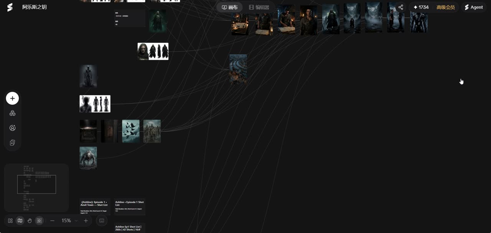
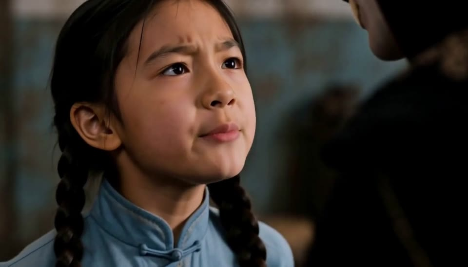
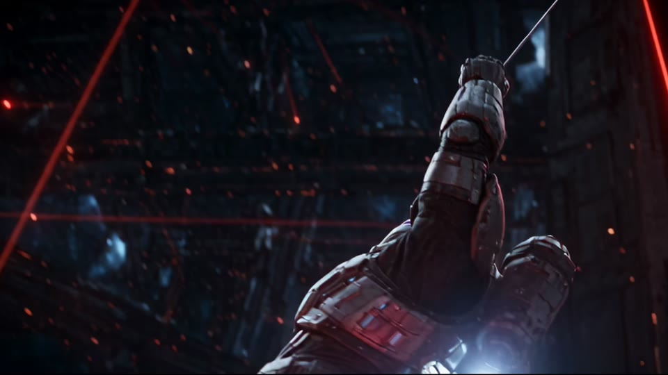
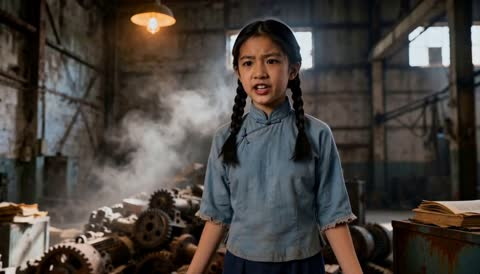
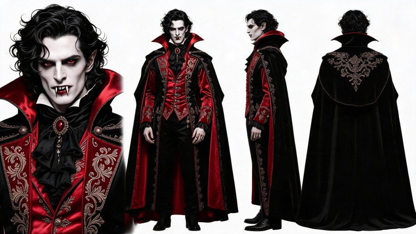
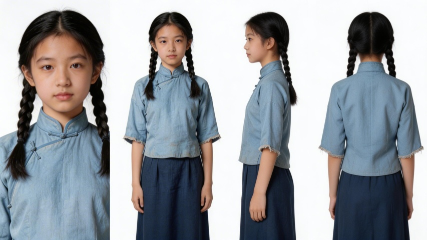
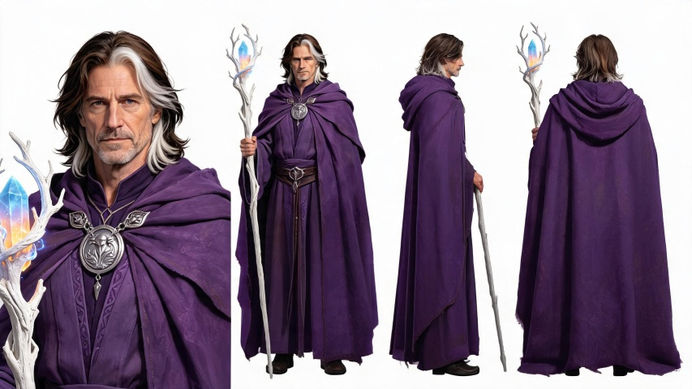

①
剧本文法
给画师的指令，画不出来、听不到的一律不写：
△ 场景 / 动作标记
人物（神态 / 动作）：台词
OS：内心独白
【闪入】回忆…【闪出】
目标岗位 · AI 视频内容 / 评测实习生
一个人，把一句灵感跑通成一部剧：
剧本 → 角色设定 → 分镜 → 合成 → 无限画布精修
奇幻短剧先导成片 + 无限画布工作流实录
《阿乐斯之钥》是我目前完成度最高的 AI 漫剧项目：先在剧本层用自建文法拆场，再于 Seko 无限画布上铺开角色三视图、场景资产与 Shot List，逐镜头生成、统一 24fps 合成，最后完成配乐与字幕。

画布实况：角色三视图、场景资产、Shot List 与分镜同屏调度。
悬停卡片即静音预览 · 点击亮灯箱带声音播放


《暗巷中的异界来客》两集共 18 个镜头 · 点击任意分镜播放
文生视频的先天短板是角色一致性与叙事连续性，我的解法是"分镜先行"：把一集拆成 7–11 个 10 秒级镜头，逐镜生成、逐镜质检（构图 / 角色 / 运动），再统一合成配乐。

SHOT 07把模糊的创意需求，翻译成模型可执行、可验收的生成指令 —— 这正是评测标注与出题的同款能力
给画师的指令，画不出来、听不到的一律不写：
△ 场景 / 动作标记
人物（神态 / 动作）：台词
OS：内心独白
【闪入】回忆…【闪出】
三视图资产约束角色一致性，正剧与轻量化小视频两条产品线并行。



一集拆 7–11 镜，逐镜文生视频 / 图生视频，逐镜验收：构图、角色、运动幅度。
18 个分镜 · 单镜 7–15 秒
镜头拼接、BGM 选配、人物字幕统一压制成片，输出双格式（HEVC 母版 + H.264 交付版）。
8min+ 成片 · 24/30fps
Seko 无限画布上复检：三视图、Shot List、场景资产同屏比对，不合格镜头回炉重生成。
JD 逐条对照，证据都在本页
教育 · 经历 · 技能
香港城市大学 CityU · 理学硕士
商务咨询系统（金融科技）· 2025–2027 在读
首都经济贸易大学 CUEB · 理学学士
信息管理与信息系统（金融方向）· 2021–2025
硕士修读：深度学习概论 · 面向企业的生成式人工智能 · AI 项目质量管控 ｜ 雅思 6.5
星连资本 · 投资助理 / 孵化器运营助理（2026.07–09）
一级市场行业研究（量化 / AI4S / 具身智能），高管访谈纪要；孵化器路演外联与初创团队辅导。
上海艾芒科技 · IT 咨询审计（2024.08–2025.05）
服务中加基金、中航基金等多家金融机构；一周自学上手业务并带教新实习生，代表公司与甲方技术对接交付。
June AI 悬浮窗 + 追问链 · 个人开发项目
针对 AI chat 线性对话痛点，实现选中即追问的子对话线，树状知识探索。
github.com/legendofgithub/June-AI-harness ↗